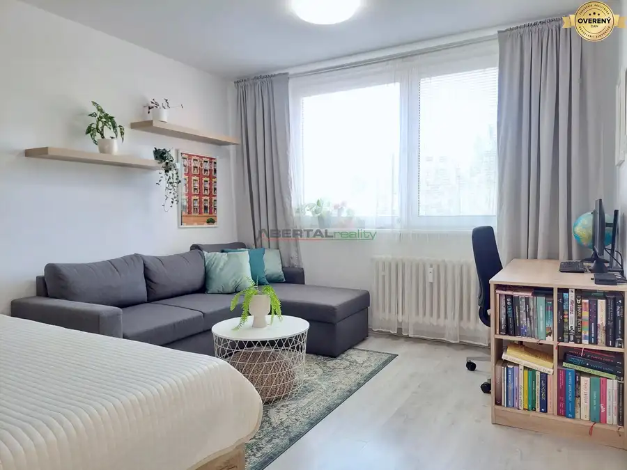
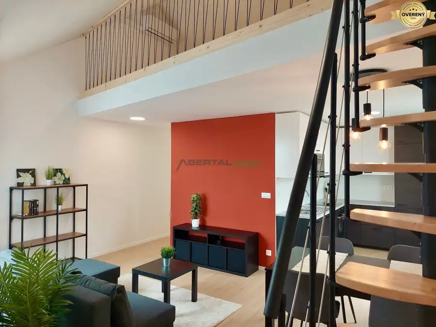
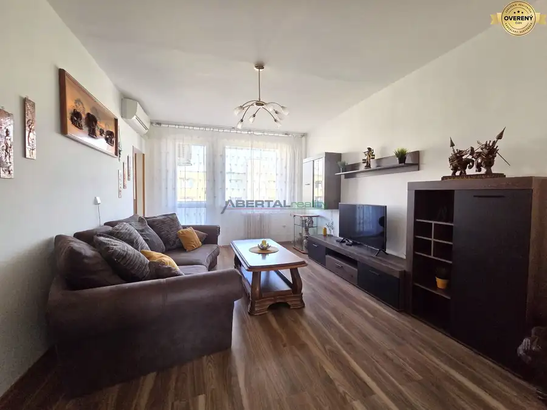

Obchodné/kancelárske priestory, viacúčelové , centrum BA, prenájom
Nivy, Bratislava
- Plocha156 m²
- Poschodie0.
- Stavčiastočne prerobený
O nehnuteľnosti
ABERTAL REALITY v exkluzívnom zastúpení majiteľa ponúka na prenájom výnimočne variabilné obchodné / kancelárske priestory s celkovou výmerou 156 m², nachádzajúce sa vo vyhľadávanej a výborne dostupnej lokalite širšieho centra Bratislavy/Rastislavova ulica.
Priestory sú prakticky rozdelené na tri samostatné funkčné celky, ktoré je možné prenajať samostatne, v kombinácii alebo ako jeden celok – ideálne riešenie pre firmy, služby, vzdelávacie či zdravotné prevádzky.
Dispozícia priestorov:
Priestor 1 (35 m2)
vlastná kuchynka
vlastná toaleta
menší šatník / sklad
Vhodný ako kancelária, ambulancia, štúdio, salón (kozmetika, kaderníctvo) alebo klientské pracovisko.
Priestor 2 (42 m2)
vlastná toaleta
sprchový kút
samostatná menšia miestnosť (momentálne využívaná na masáže)
Ideálne pre wellness/masážne služby, terapeutické, kozmetické alebo zdravotné využitie.
Priestor 3 (56 m2)
veľká školiaca / prezentačná miestnosť
zariadená (stoly, stoličky pre študentov či účastníkov)
vlastná kuchynka
vlastná toaleta a sprchový kút
Vhodné na školenia, kurzy, workshopy, vzdelávacie centrum alebo firemné zázemie, či športové/jogga, tanec, fitnes, cvičenia.
✔️ Spoločné priestory:
chodba
samostatné WC pre mužov a ženy
CENA NÁJMU:
9EUR / m2 / 156 m2
energie 330EUR/mesačne
provízia RK: 600EUR
kaucia vo výške jedného mesačného nájmu vrátane energií
Hlavné benefity:
✅ každý priestor môže fungovať úplne samostatne
✅ možnosť prenajať 1, 2 alebo všetky 3 priestory
✅ flexibilné využitie podľa potrieb nájomcu
✅ primeraný technický stav
Lokalita:
Rastislavova ulica patrí medzi stabilné a obľúbené časti Ružinova, s rýchlou dostupnosťou do centra mesta aj na obchvat.
V pešej dostupnosti sa nachádza:
MHD (električky, autobusy)
kompletná občianska vybavenosť
reštaurácie, kaviarne, služby
bezproblémová dostupnosť pre klientov aj zamestnancov
Je len na vás, či si vyberiete jeden priestor, kombináciu dvoch alebo celý objekt.
Radi vám priestory osobne predstavíme – príďte sa presvedčiť o ich potenciáli.
Teším sa na obhliadku s vami :
Parametre
| Celková rozloha | 156 m² |
|---|---|
| Úžitková plocha | 156 m² |
| Poschodie | prízemie |
| Stav | čiastočne prerobený |
| Odvoz odpadu | áno - separovaný |
| Internet | wifi |
| Kúpeľňa | sprchovací kút |
| Vykurovanie | áno |
| Terasa | nie |
| Pivnica | nie |
| Parkovanie | verejné |
| Postavené z | Zmiešané |
| Zariadenie | čiastočne |
| Zateplený objekt | áno |
| Klimatizácia | nie |
| Káblová televízia | nie |
| Energetický certifikát | nie |
| Bezbariérový prístup | nie |
| Okná | plastové |
| Dátum zverejnenia | 4. 4. 2026 |
Kde to je
Mohlo by Vás zaujímať

Byt10 178 000 €1 izbový zariadený, s pivnicou, tichá lokalita, Žarnovická - Rača Rača, Bratislava 1-izbový38 m²2. podlažie ABERTAL REALITY v exkluzívnom zastúpení majiteľa ponúka na predaj príjemný a priestranný 1-izbový byt po kompletnej rekonštrukcii, situovaný v…
Byt10 Cena dohodouÚžasný byt + loft, klíma,balkón, parkovanie v garáži - Jarovce Petržalka, Bratislava 2-izbový58 m²3. podlažie ABERTAL REALITY na základe poverenia majiteľa exkluzívne ponúka k prenájmu úžasný, presvetlený loftový byt v Jarovciach (začiatok Jaroviec od…
Byt10 Cena dohodouPRENÁJOM 3-izb.byt /loggia/ klíma/ Dudvážska–BA Podunajské Biskupice Podunajské Biskupice, Bratislava 3-izbový67 m²4. podlažie Hľadáte bývanie pre svoju rodinu v lokalite s kompletnou občianskou vybavenosťou? Ponúkame na prenájom 3-izbový byt na Dudvážskej ulici v…